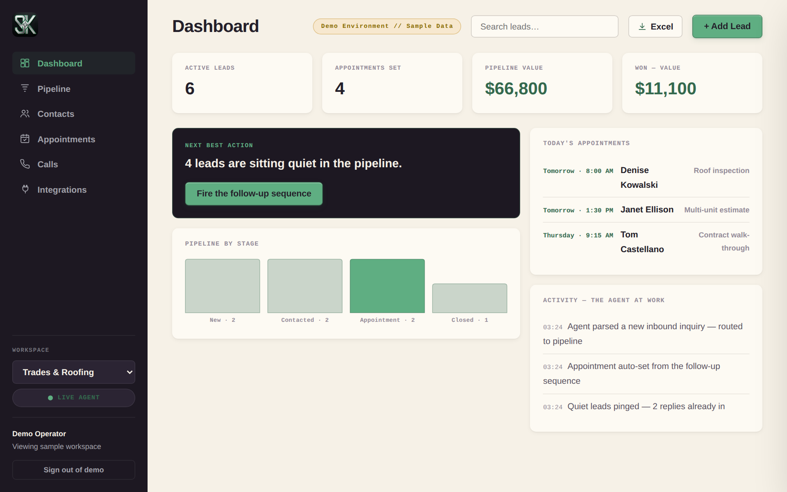

Every Call Answered. Every Follow-Up Sent. Nothing Slips.
SK ShiftControl builds AI agents that run your front office — the phones, the follow-ups, the scheduling, the pipeline. Your team stops drowning in busywork. You finally see every number in one place. We build it, deploy it, and train your people — most floors go live in weeks, not months.
From Audit to Autonomy in Four Moves.
See the Floor You'd Actually Run.
This is the live demo — the same screens your team would use. Open it, drag a lead, watch the agent book a call. It takes about 60 seconds to understand what changes.

Next best action — one suggestion, one button Try it yourself →Answered 24/7. Booked, routed, or rescued — every call logged with what the caller said.
Sent on time, every time. No lead sits quiet. No follow-up depends on memory.
One screen your team trusts. Drag leads, edit anything, export to Excel in one click.
Your platforms, reconciled. CRM, calendar, phones, and payments flow through one n8n pipeline.
Enterprise Security & Client Confidentiality Protocols
Zero-Data Retention (ZDR) Architecture: All client file streams are processed strictly in-memory. Data is never cached, stored on backend servers, or utilized for public training models. Your proprietary business data is completely vaporized the millisecond execution completes.
You Can't See It on the P&L. You Feel It Everywhere Else.
- The Blur. Sales in the CRM, orders in spreadsheets, invoices in email. One number, three answers.
- The Static. Every channel shouting at once. Your best people triage noise all day.
- The Drag. Re-keyed data. Follow-ups from memory. Month-end by hand.
None of this is a people problem.
It's an architecture problem.
Your Operation, Running Itself.
- Phones answered 24/7 — booked, routed, logged.
- Follow-ups sent on time — no lead sits quiet.
- One pipeline — every number in one place.
- Your platforms synced — one n8n pipeline behind them all.
- Zero-Data Retention — processed in memory, never stored.
We exist to close one gap: the distance between the business you're running and the business you built.
Before deployment, everything important lives in someone's head, and every week ends heavier than it began. After deployment, the noise resolves into signal — follow-ups fire themselves, decisions happen on time, and the whole operation comes into focus.
We build that bridge, and we price it against the value of crossing — never against the hours it takes. Naturally, we only win when the outcome is undeniable.
Three Agents. Three State Changes.
Not zaps. Not chatbots. Autonomous agents built on n8n architecture — memory for context, tools to act, judgment to decide. You aren't buying the build. You're buying the transformation.
The Revenue Recovery Agent
Outcome: revenue that was already yours, captured.
The Intake & Routing Agent
Outcome: your sharpest hours returned to the work only humans can do.
The Intelligence Agent
Outcome: decisions made sooner, on ground you trust.
Built on: n8n · Claude & GPT-class models · your existing CRM and data stack — because the architecture serves the outcome, not the other way around.
Built for the Way Your Floor Runs.
Six live builds. Open yours — the full pitch and a working console are on every page.
Contractors & Crews
Every emergency call answered. Crews booked while you sleep.
See the live build →Law Firms
Intake, drafting, docketing — handled the night someone calls.
See the live build →Clinics & Practices
Empty chairs filled from the waitlist. Recalls that book themselves.
See the live build →Venues & Restaurants
Quiet nights filled. After-close calls rescued. Regulars won back.
See the live build →Brokerages & Teams
First to every lead — in seconds, not hours.
See the live build →Stores & Brands
Support triaged. Wholesale spotted. Reviews answered.
See the live build →Industry builds — a live demo for each.
Coverage. 2 AM answered like 2 PM.
Point of contact — the operator who built it.
Three Ways In. All of Them Forward.
Every engagement is fixed-fee, priced against the ROI model from your audit — never against hours. Because you're buying an outcome, not our time on a clock.
The Systems Audit
- Full diagnostic of your tools, data flows, and process costs
- The leak ledger: every manual drag, priced
- ROI model and agent recommendations, ranked by return
- The map is yours to keep — whatever you decide
Fixed fee // scoped in one call
One Agent, One Bottleneck
- Your single highest-value bottleneck, automated end-to-end
- One advanced agent deployed on n8n — memory, tools, judgment
- Team training engineered for frictionless adoption
- Instrumented baseline vs. after — the delta is the proof
Fixed fee // priced against the ROI model
The Full Architecture
- All three agents, staged across your operation
- Database consolidation into live master tables
- Quarterly strategy reviews against the Strategic Diamond
- For operators who want the entire future state — compounding
Fixed fee // for when the whole gap is worth closing
Measured Outcomes or It Didn't Happen.
Every deployment is instrumented from day one. Hours reclaimed, error rates, adoption, and dollars recovered are tracked against the baseline captured in your audit — and published here as case files.
Tiger Roofing & Masonry
Full deployment for a working roofing and masonry contractor: a custom website built from the ground up, a live lead generation pipeline, and a CRM with automated appointment setting — inbound inquiries get captured, tracked, and booked without the owner leaving the job site. The owner reports the engagement was a genuinely good experience and stands behind the work as a reference.
More case files publish as builds complete.
Everything Operators Ask Before They Deploy.
What does an engagement actually cost?
Every engagement is fixed-fee, priced against the ROI model built in your Systems Audit — never hourly. You choose between three options of increasing scope (Diagnose, Deploy, Command), and you see the return math before you commit to anything.
How fast does deployment happen?
The Systems Audit is one 30-minute call. From there, deployment is staged: data consolidation first, then agents tested against your live operation and rolled out in phases. Your exact scope and timeline are fixed in the pitch before any build starts.
Do we have to replace our current tools?
No. The architecture is vendor-agnostic — agents are built on n8n around the CRM and data stack you already run. We integrate what you have and build only what doesn't exist.
What happens to our data?
Client file streams are processed in-memory under a Zero-Data-Retention posture — never sold, never distributed, and never used to train public models.
Will AI agents replace my team?
They replace the manual load, not the people. Payroll hours return to judgment work only humans can do, and every system is designed with adoption psychology so your team actually uses it.
Do you build websites too — or just the automation behind them?
Both. Full website design and build is part of the arsenal — along with lead generation engines and AI appointment setting — because a site that isn't wired into the pipeline that books the work is just a brochure. See the live Tiger Roofing & Masonry build in the case files above.
We're not in hospitality or law — can you still build for us?
Yes. The Systems Audit maps any operation that runs on intake, follow-up, and reporting. And if the audit shows automation isn't worth it for you yet, we say so — you keep the map either way.
Every Operation Ends Up Automated. The Only Variable Is Who Gets There First.
Thirty minutes. You leave with a map of where your operation leaks time and money — and what we'd deploy to stop it. The map is yours either way.
Widget not loading? Open the scheduling page directly →
Need to share this with a partner first? Download the one-pager (PDF) →
Skip the Calendar. We'll Call You.
Drop your number. The intake agent calls back within five minutes and maps your bottlenecks on the spot.
Callback initiated.
Keep your line open — you're in the queue.
Answered by the intake agent. Logged, structured, routed.